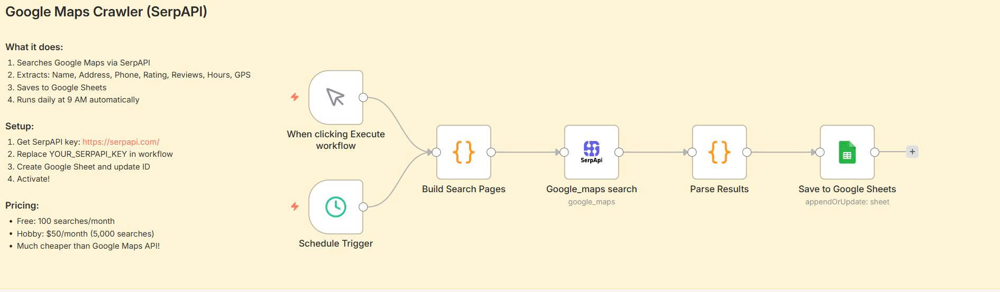
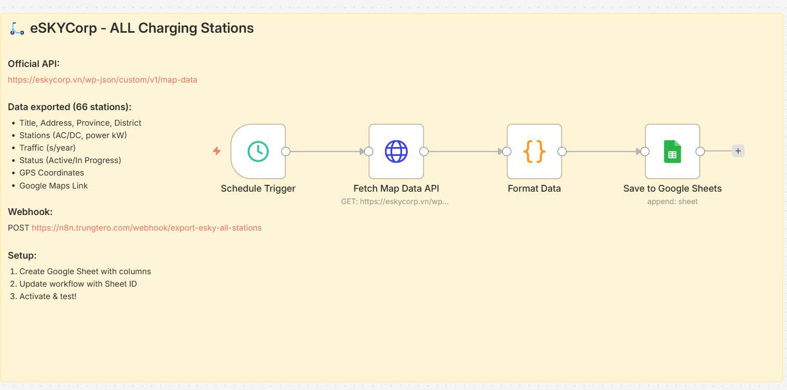

Long wait times
Complain about waiting 15–30+ minutes at traditional wash shops.
Hackathon pitch deck
Full-stack AI-assisted sustainable car-care marketplace demo
Connecting EV and hybrid owners, car wash providers, and platform operators through intelligent discovery, ranking, booking support, and ecosystem growth.
Team spotlight
A focused product and engineering team shaping WashNet as a demo that is not only visually polished, but operationally credible end to end.
Problem
Complain about waiting 15–30+ minutes at traditional wash shops.
Experience varying service quality — no standardized process across different shops.
Face issues with unclear pricing and unexpected hidden fees.
Struggle to schedule appointments; most shops operate on a first-come, first-served basis.
Resource: InsightAsia (2025), Vietnam Automotive Customer Satisfaction Study.
Solution
It connects vehicle owners, providers, and operators through one discovery and decision layer powered by search, ranking, slot support, and ecosystem intelligence.
Fast location-based discovery for trusted providers around the user.
Find merchants that fit the journey, not only the destination.
Balance distance, reviews, trust, openness, and service richness.
Turn merchant context and timing signals into better scheduling suggestions.
Give operators a forward view of search and booking demand by zone and hour.
Grow visibility for providers while improving trust and oversight for the full marketplace.
Full-stack architecture
The architecture is designed to be demoable today and extensible tomorrow.
Tailwind 4, React Router 7, PrimeReact, and Leaflet power the user-facing exploration and dashboard experience.
Serves auth, search, route preview, merchant detail, slots, forecasting, bootstrap, and admin/provider flows.
Processed data can be loaded into operational tables while analytics and ML artifacts remain under Dataset.
Ranking, slot recommendation, and forecasting outputs are stored as files and consumed safely by the API.
Google Maps and review collection flow upstream into Dataset; the Dockerized stack runs locally and the same platform is deployed live at trinova.it.com.
Solution architecture
End-to-end view of WashNet layers, integrations, and data paths for the Lotus Hackathon build.
.png)


AI / intelligence layer
WashNet uses a staged approach: preprocessing, baseline logic, interaction logging, training data, prototype models, and safe serving defaults.
Nearby and on-route retrieval baselines feed ranking outputs, while learning-to-rank artifacts remain ready for experimentation.
Heuristic-first slot serving is backed by synthetic interaction design, model-ready datasets, and classifier evaluation outputs.
Zone and hour demand aggregation supports forecasting prototypes and dashboard-friendly summaries for operators.
Functionality / reliability
Innovation
Search follows the trip context, which is a better fit for real-world service decisions than static nearby-only lookup.
Ranking, slot, and forecasting are engineered as explainable, staged system components with safe fallbacks.
Owners, providers, and operators are treated as one connected network with shared value creation.
n8n workflows connect data collection and synchronization to the rest of the stack, strengthening the pipeline story.
Impact / relevance
More trust, faster discovery, and better timing when searching for the right wash service.
More visibility, better reach, and clearer positioning inside an emerging sustainable mobility ecosystem.
Stronger control over service quality, search quality, and demand planning across the network.
Demo / system evidence
React + Vite frontend with explore, merchant cards, slots, and admin/provider views.
FastAPI endpoints already expose core serving capability and demo hydration routes (same host as the live app when proxied).
Upstream workflows and downstream artifacts make the intelligence layer traceable.
Dockerized startup keeps frontend, backend, and database aligned for demo reliability; production is live at trinova.it.com.
Roadmap
Move from synthetic learning signals to real user behavior across search, click, slot, and booking flows.
Improve model quality with online evaluation, better calibration, and richer feature coverage.
Bring in more merchants, richer service taxonomy, and stronger provider-side tooling.
Move from prototype forecasting to better operational planning and zone-level actions.
Closing
WashNet is built to show technical depth, marketplace thinking, and practical intelligence in one coherent demo platform.
WashNet